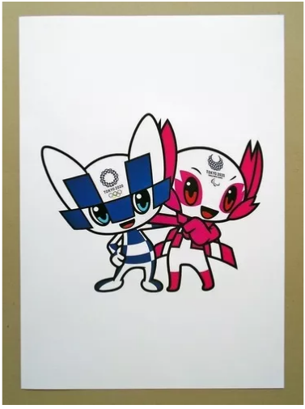
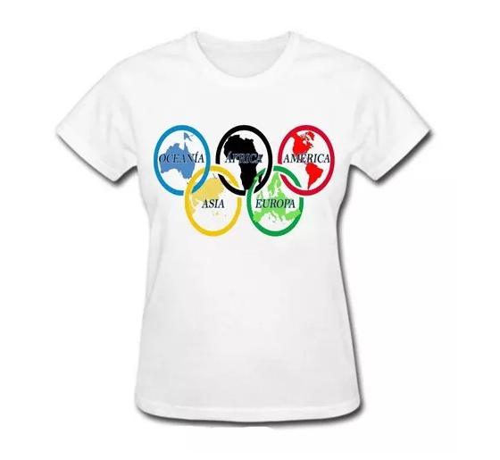

Produtos
Quadro decorativo
Camiseta adulto e infantil
Moeda decorativa

24 julho 2020 – 9 agosto 2020
Tóquio Japão 🇯🇵
Jogos Olímpicos de Verão de 2020 第三十二回オリンピック競技大会 conhecidos oficialmente como os Jogos da XXXII Olimpíada, mais comumente Tóquio 2020, será um evento multiesportivo realizado no segundo semestre de 2020, na região metropolitana de Tóquio, Japão. A escolha da sede foi feita durante a 125ª Sessão do Comitê Olímpico Internacional, que aconteceu em Buenos Aires, Argentina, em 7 de setembro de 2013.
A região metropolitana de Tóquio sediou os Jogos Olímpicos de Verão de 1964, Assim, será a primeira cidade a sediar os Jogos Olímpicos duas vezes na Ásia. Além disso, esta será a quarta edição dos Jogos a serem realizados no Japão. Juntamente com os Jogos de Verão de 1964, o Japão já sediou duas vezes os Jogos Olímpicos de Inverno. A primeira vez foi Sapporo 1972 e a segunda vez foi Nagano 1998.
A esgrima é um desporto que evoluiu da antiga forma de combate, em que o objetivo é tocar no adversário com uma lâmina ao mesmo tempo que se evita ser tocado por ele.
O boxe ou pugilismo é um esporte de combate, no qual os lutadores usam apenas os punhos, tanto para a defesa, quanto para o ataque.
é uma arte marcial japonesa desenvolvida a partir da arte marcial indígena de Okinawa sob influência da arte da guerra chinesa, das lutas tradicionais japonesas e das disciplinas guerreiras japonesas.
BMX ou bicicross é um esporte praticado com bicicletas especiais, uma espécie de corrida em pistas de terra. Surgiu no final da década de 1950 na Europa e se popularizou na Califórnia no começo dos anos 1960.
Golfe é um esporte no qual os jogadores usam diversos tipos de tacos para arremessar uma bola para uma série de buracos numa vasta extensão de terreno, usando o menor número possível de tacadas.
é um esporte que consiste em deslizar sobre o solo e obstáculos equilibrando-se numa prancha, chamada também de esqueite ou skate, dotada de quatro pequenas rodas e dois eixos chamados de trucks.